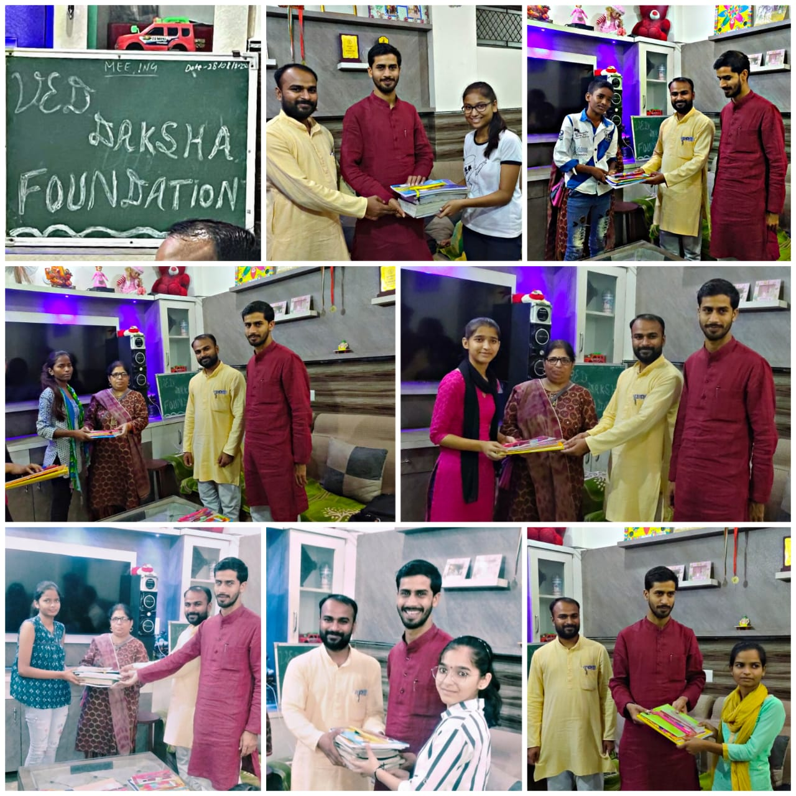
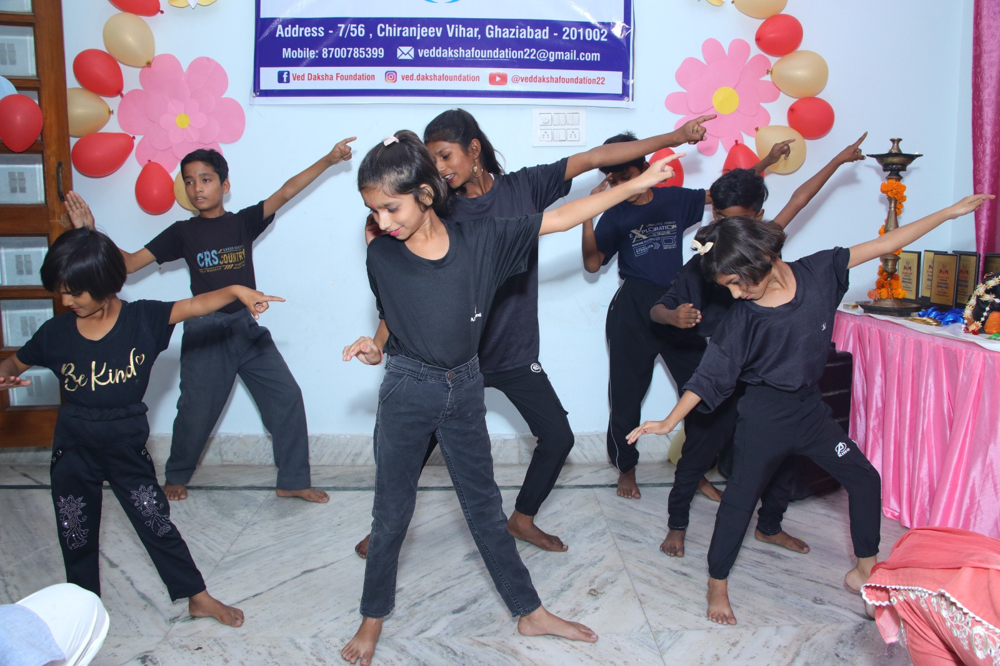
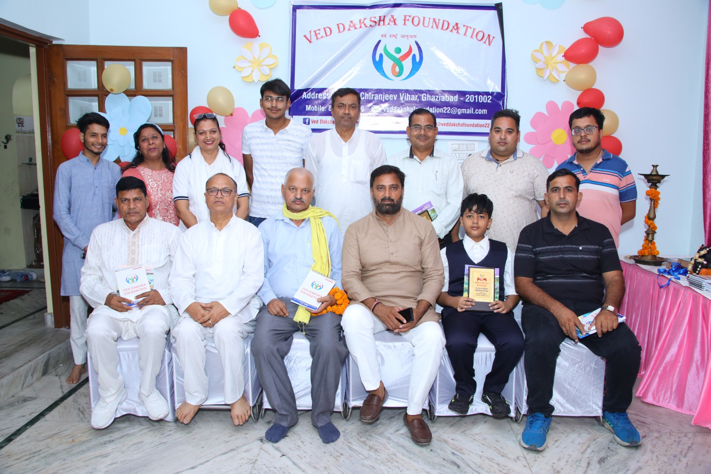
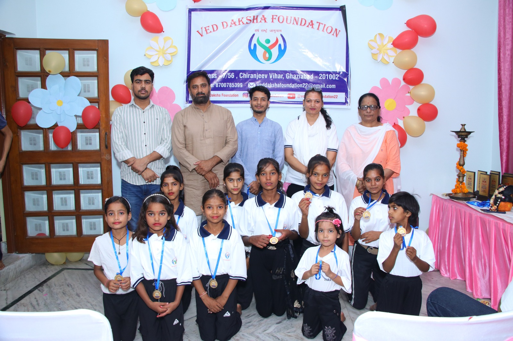
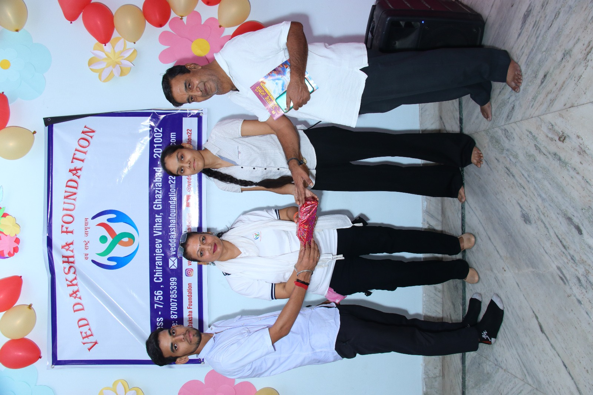
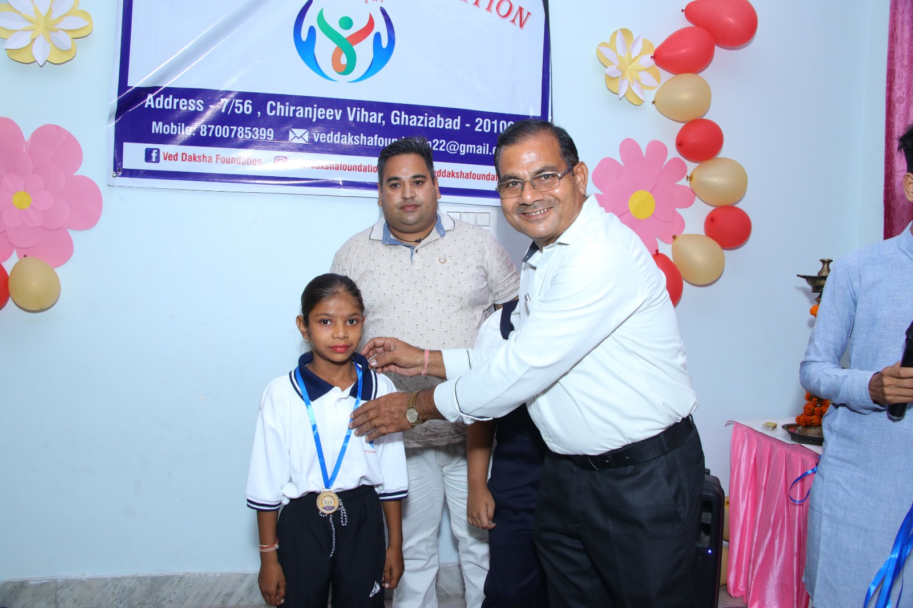

Education
Date
Blog Title
By Author
Blog content...
Read about our work, our children's journeys, and how education is changing lives in Ghaziabad.

When a child from a daily-wage family gets access to books, a classroom, and a caring teacher — everything changes. At Ved Daksha Foundation, we see this transformation every single day. Children who were once out of school are now reading, writing, and dreaming of careers...
Read More
Physical expression, discipline, and artistry are not extracurricular — they are the core of holistic childhood development. When our children perform yoga and dance on stage, they're not just performing — they're proving to themselves and the world that they are capable of excellence...
Read More
Books, time, skills, connections, and presence. There are more ways to give than you think. Our volunteers prove this every week — some teach English, others organise health camps, and some simply show up to cheer our children at performances...
Read More
Meet the children who came to our centre with nothing but potential, and are now performing yoga, winning medals, and dreaming bigger than ever. These are not just success stories — they are a call to action...
Read More
A reflection from one of our long-term volunteers. Spending weekends at the foundation changed how I see my city, my resources, and my responsibilities as a citizen. Here is what I learned...
Read More
What drives someone to open their home, their time, and their resources to dozens of underprivileged children? We sat down with our founder to understand the vision behind Ved Daksha Foundation...
Read More